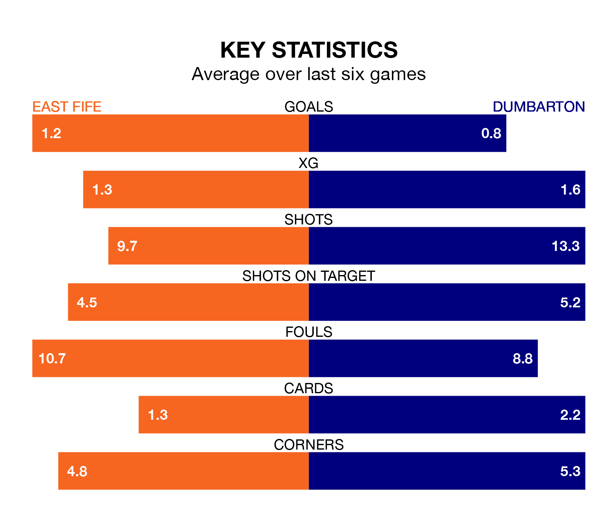

Dumbarton travel to the MGM Timber Bayview Stadium for Saturday's match against East Fife looking to bounce back from defeat last time out in League Two.
The Sons, who sit fourth in the league after 27 games, fell to a 5-0 away defeat to Stranraer on Tuesday.
They face an East Fife side who picked up a win in their last match, a 3-1 victory against Spartans, and who sit fifth in the table.
With 40 goals in 27 games so far this season, Dumbarton are scoring more than average in the league with 1.5 goals per game. And they are conceding at an average rate, letting in 35 goals at a rate of 1.3 per game.
East Fife, meanwhile, are average scorers, with 1.3 goals per game. They have also conceded 1.3 goals per game.
In the last 10 years, East Fife and Dumbarton have played each other on 22 occasions. East Fife won nine of them, Dumbarton 12, and they drew once.
On average, the Fifers scored 1.3 goals and the Sons 1.7 in those matches.
Their last meeting was on January 6, when East Fife won 2-1 away.
In Nathan Austin, the Fifers have one of the league's most on-form strikers so far this season. He has notched 11 goals in 26 appearances, to sit third in the scoring charts.
His goal rate of one every 188 minutes is slightly quicker than that of Tony Wallace, the Sons's top scorer with a goal every 183 minutes, and a total of nine goals in 27 games.
The home team are in mixed form in League Two, with two wins and two draws from their last six games.
And also with two wins and two draws over that period, the visitors' form is identical – they have both taken eight points from 18.
Saturday's match will be refereed by Scott Lambie, who has taken charge of three League Two games so far this season, issuing one red card and booking eight players. He has awarded five penalties.
He is yet to oversee a match featuring either East Fife or Dumbarton this season.
Updated: 09:34 (UTC), 08/03/24